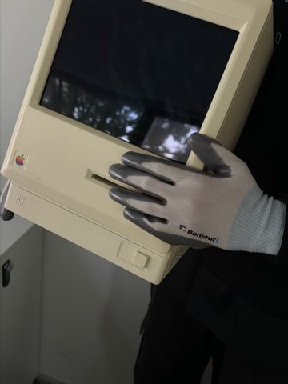

商业化调研
Skill 变现
站外规律
判断
Skill 是名片，
小工具是容器
头部 Skill 作者（匿名访谈）变现靠人工代跑交付，收入约 5 万，交付即泄露；外部创作者案例的共同规律是
收入都在站外
。判断：Skill 是能力证明与获客入口，小工具才是变现容器。
访谈 × 公开案例交叉验证
调研口径
关于这个项目 +

能力证明 →
Skill
｜ 交付容器 →
小工具
访谈：收入约 5 万（代跑交付）
站外案例：240 万 / 120 万·年（调研口径）